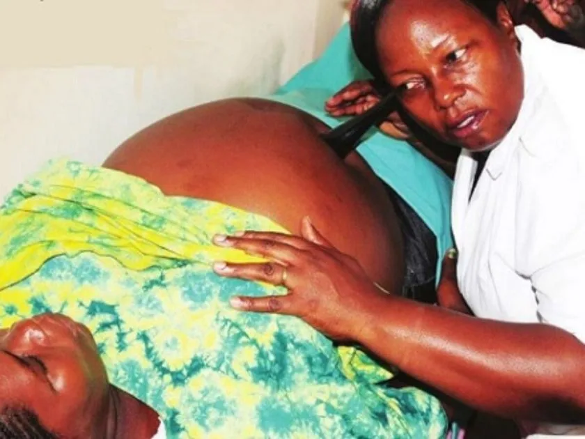

Expanded Nursing Uganda Explanation
Antenatal care should be reviewed through safe maternal and newborn assessment, early recognition of danger signs, respectful communication and timely referral. Connect the definition to vital signs, bleeding, fetal or newborn wellbeing, patient education and local protocol requirements.
01 Antenatal Care
Antenatal care is a planned methodological care and supervision given to a pregnant woman by a midwife or obstetrician from the time the mother starts attending antenatal clinic until beginning of labour .
Aims of antenatal care
- To monitor the progress of pregnancy in order to support maternal health and normal fetal development.
- To prepare the mother for labour, lactation and subsequent care for her baby.
- To detect early and treat appropriately high risk conditions be it medical or obstetrical that would endanger the life of the mother and the baby.
This is achieved by;
- Developing a partnership with the woman.
- Providing a holistic approach to the woman’s care that meets her individual needs.
- Promoting awareness of the public health issues for the woman and her family.
- Exchanging information with the woman and her family enabling them to make informed choices.
- Being an advocate for the woman and her family, supporting her right to choose care that is appropriate for her own needs and those of the family.
- Recognize complications of pregnancy and appropriately referring women within the multi- disciplinary team.
- Facilitating the woman to make an informed choice about methods of infant feeding and giving appropriate and sensitive advice to support her decision.
- Facilitating the woman and her family in their preparations to meet the demands of birth and making a birth plan.
- Offering health education for parenthood.
- Registration
- Booking (history taking)
- Special tests and investigations
- Health education
- Immunization
- Treatment of minor disorders
- Provision of supplements
- Examination i.e. physical and abdominal
- Orientation of mothers
- Formulating a birth plan
- counseling.
- Referral of cases
02 INITIAL ASSESEMENT (BOOKING DAY)
- Demographic data
- Name
- Age
- Address
- Occupation
- NOK; relationship, occupation, contacts.
- LOE
- Tribe
- Religion
- Nearest health facility and distance from home.
Social history Habits
- Smoking ; Cigarettes have nicotine which constricts blood vessels leading to placental insufficiency, which can result in fetal hypoxia, small for dates, abortions etc. The woman should be advised to reduce on the number of sticks gradually to avoid withdrawal syndrome.
- Alcohol ; There is a risk of trauma which can result into abortion, placenta abruption, loss of appetite thus malnutrition and small for dates.
- Marital status ; -Married or single, number of years spent in marriage, find out if she’s happy or not.
Home environment
- – House ; – Rented or own, number of rooms and number of occupants.
- – Environmental hygiene
- – Source of water and food.
Family history
- Health status of woman’s parents and her siblings (if deceased, note cause of death).
- Familial diseases e.g. history of cancer, diabetes, cardiac diseases, allergies etc.
- Other serious illnesses like mental illnesses or complications with pregnancy.
History of multiple pregnancies. Past surgical history
- History of accidents involving the spine, pelvis and lower limbs which would reduce the pelvic diameters.
- History of major operations like C/S, and pelvic operations.
- History of blood transfusion(risk of exposure to HIV/AIDS and iso immunization)
Past medical history
- Medical conditions that may complicate or be complicated by pregnancy, labour and
- Puerperium e.g. sickle cell, DM, HTN.
- Child hood illnesses e.g. rickets, polio myelitis which can reduce pelvic diameters, hence
- Contracted pelvis.
- Infectious diseases like TB, Hep B
- Infections like syphilis, gonorrhea,
Gynecological history
- Gynaecological conditions like abortions, ectopic pregnancy, fibroids etc.
- Gynaecological operations like myomectomy, D and C, evacuation etc.
- Menstrual history
- Menarche, length, interval, amount of flow.
- Dysfunctional uterine bleeding (DUB).
- Pre- menstrual spotting.
- Family planning
- Method of F/P ever used any complaint about it, reason for stopping it.
Past obstetrical history
- Previous pregnancies; ask about any abnormalities e.g. abortions, still births, living children and their health status and immunization status.
- Interval between pregnancies, length of gestation, birth weight, fetal outcome, length of labour,
- Presentation and type of delivery. Prenatal and post natal complications, if baby was breast fed and for how long.
- Labour; Any operations, induction, assisted delivery, PPH.
- Puerperium; If it was normal, any h/o sepsis, PPH.
Present obstetric history
- Gravidity
- Parity
- LMNP
- EDD. This is calculated by adding 9 calendar months and 7 days to the date of the 1 st day of the woman’s last menstrual period (Naegele’s rule).
This method assumes that:
- The woman takes regular note of regularity and length of time between periods.
- Conception occurred 14 days after the first day of the last period. If the woman has a regular cycle of 28 days.
- The last period of bleeding was true menstruation. Implantation can cause slight bleeding.
- Break through bleeding and anovulation can be affected by contraceptive pill thus impacting on the accuracy of LNMP.
- WOA
Present health
- Appetite ; It is important to know because poor appetite leads to malnutrition and anaemia.
- Sleep ; Find out if the mother sleeps well, if not, find out the cause which could be due to worries, insects in bed, pain and any signs of illness.
- Micturition ; It’s good to know whether the woman passes urine well because UTI is common in pregnancy due to stagnation of urine in dilated and kinked ureters. In case of increased frequency without pain, mother is counseled in relation to physiology of pregnancy.
- Bowel action ; as constipation is very common in pregnancy, the mother is re assured and advised to take plenty of fluids and roughages.
NB: Conclude history by asking mother if she has anything else she would like to tell you.
On the first day, every woman should receive the following investigations
- Blood pressure
- Weight
- Height
- Urinalysis; – for albumen, acetone and sugars.
- Albumen is indicative of PET, acetone-dehydration, sugar- diabetes.
- RPR/VDRL; done to exclude syphilis.
- HIV screening to ensure
- EMTCT
- Blood grouping
- Hb level; It should be done on booking day, then at 32-34 weeks and lastly at 36weeks to rule out anaemia.
- Comb’s test; It’s done to detect anti bodies in blood.
- Weight ; this is taken on every visit to ANC. The mother is expected to gain 12.5kg during pregnancy, 4kg in the first 20 weeks and 8.5kg in the last 20 weeks. Excessive weight gain could be due to twins, big baby, polyhydramnios etc. Failure to gain weight could be due to poor fetal growth.
- Height; It’s done on the booking visit or in labour if the mother has not been attending ANC. The normal height should range 152-170cm, below 150cm indicates a small pelvis and above 170cm indicates a narrow pelvis.
- Shoe size ; if below 5 indicates a small pelvis. Normal shoe size ranges between 5 and 8.
- Blood pressure; this is done on every visit to ANC. The BP of a pregnant mother ranges from 90/60 to 140/90mmhg.A raised BP is a danger sign and may be due to PET and eclampsia. Any rise of 30mmhg (systolic) and 15-20mmhg (diastolic) from what has been considered normal is dangerous and the mother’s urine should be tested for proteins. The mother is asked how she feels generally especially her sight (blurred vision), then referred to the doctor.
03 PHYSICAL EXAMINATION
This includes a review of the physical systems to ascertain the woman’s general health. The breasts, pelvis and abdomen receive particular attention. The examination is carried out systematically beginning with the head and ending with the pelvis and abdomen.
General appearance;
- Body type, weight, energy level, grooming, posture. This is noted when the mother is entering the room or when she is sitting.
Head;
- Scalp , hair whether treated and hair pattern distribution.
- Eyes; conjunctiva- check for anaemia, sclera- check for jaundice, visions, discharge.
- Nose ; Sense of smell, bleeding, obstruction, abnormal growth and discharge.
- Oral cavity; Toothache, denture, state of lips, chewing or swallowing problems, tongue and gums for anaemia, sense of taste.
- Ears ; Check for discharges, any hearing loss.
Neck;
- Movement, Palpate for swelling or enlarged salivary glands i.e parotid, sub mandibular, sublingual, thyroid, lymph nodes i.e. superficial cervical and deep cervical glands, sub clavicles.
- Palpate and observe jugular veins and pulsation of the thyroid gland. Swelling of the thyroid gland may be due to iodine insufficiency though during pregnancy there is a slight enlargement of the glands may be due to chronic cough. Extended jugular veins may be due to cardiac problems or anaemia.
Upper limbs;
- They should be two with the same size and length, skin texture and muscle wasting. Palms examined for the colour, finger nails if capillary refill is good and oedema.
Chest ;
- Observe how the mother is breathing to detect if the mother has problems with respiratory system like pneumonia.
Breasts; – Inspection .
- Observe for size, equality, shape, pulling of breasts.
- Signs of pregnancy, signs of abnormalities like changes in skin e.g. redness, orange like discoloration.
- Nipple for prominence , dimpling retraction, size, flat, well protracted or not.
- Presence of scars , cracks, sores, axillary extension.
– Palpation
- Examined for breast abnormalities and deep seated masses.
- This is done to promote proper breast feeding and exclude abnormalities.
Back;
- Check for any fungal infections, scars, sacral oedema( may indicate PET or Eclampsia)
Lower limbs
- Size, muscle wasting, pain or stiffness of joints, pain in the calf muscles, oedema, varicose veins, extra digits, any infections, tibia and ankle oedema.
Feet;
- Hygiene, any fungal infections, nails check for venous return and colour. Sole of the feet for cleanliness and colour.
- Perform a Homan’s sign: Homans’s sign is often used in the diagnosis of deep venous thrombosis of the leg. A positive Homans’s sign (calf pain at dorsiflexion of the foot) is thought to be associated with the presence of thrombosis.
- Assess for maternal efforts.
Vulva ;
- Check for sores, warts, varicose veins, abnormal discharges etc.
- Request mother to cough while observing for discharges.
04 Abdominal examination
It is carried out from 24 weeks gestation to establish and affirm that fetal growth is consistent with gestational age during pregnancy.
- To observe signs of pregnancy.
- To assess fetal size and growth.
- To assess fetal health by auscultating the fetal heart.
- To detect any deviations from normal
- To diagnose the location of fetal growth.
- To locate fetal parts.
Preparation/ procedure:
- > Ensure mother has emptied the bladder within the last 30 minutes before abdominal examination.
- > Ensure privacy
- > Mother should be on a couch.
- > Wash hands and expose only the area of the abdomen that needs to be palpated and cover the remainder of the woman to provide her privacy and protect her dignity.
STEPS
- Inspection
- Palpation
- Auscultation
Stand at the foot of the bed while mother is on her back with abdomen exposed from the xymphy sternum up to the symphysis pubis. Look at the size, shape, operational scars, signs of pregnancy like darkening of linea nigra below and above the umbilicus, fetal movements, Striae gravidurum etc.
> Abdominal palpation is also known as leopold’s maneuvers.
- Stand at the right side of the mother, pads and not tips of fingers are used and palpate as follows;-
- > Superficial palpation for localized tenderness.
- > Hypochondriac palpation for enlarged organs.
- > Height of fundus estimation
- > Pelvic palpation for presentation
- > Fundal palpation for the lie
- > Lateral palpation for position
NOTE: During a deep pelvic palpation, a midwife grips the fetal head between the thumb and fingers to check for engagement, this maneuver is termed as pawlik’s grip/second pelvic grip.
This is the way of listening the fetal heart to determine fetal wellbeing by use of feto- stethoscope. Abdominal summary
- -Height of fundus
- -Presentation
- -Lie
- -Position
- -Fetal heart.
Case summary
- > Comment on all histories, general and abdominal examination.
- > Feed back
- > Advice
- > Return date
05 ONGOING ANC
PURPOSE
- To continue to observe for maternal health and freedom from infections.
- To assess fetal wellbeing.
- To ascertain that fetus has adopted a lie and presentation that will allow vaginal delivery.
- To offer an opportunity to express any fear or worries about pregnancy and labour.
- To ensure that mother and family are confident to decide when labour starts.
- To discuss any views about the conduct of labour and formulate a birth plan if required.
- Risk factors arising during pregnancy
- Change in fetal movement pattern- increased or reduced
- Hb less than 10g/dl
- Poor weight gain or weight loss
- Proteinuria
- Bp above 140/90mmhg
- Uterus large or small for dates
- Excess or decreased liquor
- Malpresentation
- Any vaginal bleeding
- Premature contractions
- Vaginal infection
- Head not engaged by 38weeks in PGs
On each visit, do the following
- > Review the card and assess any past complaints
- > Take BP, weight and test urine
- > Carry out general and abdominal examination.
- > Give drugs accordingly.
- Increased maternal weight in association with increasing uterine size.
- Fetal movements which follows a regular pattern throughout pregnancy.
- Fetal heart rate between 120-160b/m
06 **Individual birth plan**
The plan includes
- A birth place where there is a skilled birth attendant
- Identifying someone to take care of the family in her absence
- My EDD
- Her choice of birth companion.
- Identifying a blood donor.
- Her choice of clothes for labour.
- Strategies for labour pain relief.
- Position for labour and child birth.
- Place of delivery.
- Transportation to use and how it will be available
- How to raise funds for transport and cost of delivery.
- Family security and feeding provisions.
- Family planning goals after baby is born.
- Where to go after delivery.
- Next appointment.
NB: Involve the partner in the birth planning process. Teach mother how to recognize onset of labour. – Nutrition – Sleep and resting – Sexual counseling – Hygiene – Daily activities – Weight gain – Postnatal follow-up
6. Immunization : – TT
- After taking proper history, done a thorough physical examination and relevant investigations, record all findings in the antenatal card.
- Interpret the findings so as to identify the risk factors.
- Give care and management accordingly.
- Give appointment for the next visit accordingly.
Assignment Discuss the goal oriented antenatal protocol.
07 PELVIC ASSESSMENT
This is estimation of the pelvic cavity so as to see whether its adequate for that particular baby to pass through. OR
It is an examination done by a doctor or midwife on a pregnant woman at or after 36weeks to see that both the mother and baby are out of danger at the time of delivery.
It is always done at 36 weeks because of the relaxation of the pelvic joints due to Relaxin hormone.
Aims
- > To rule out poor obstetric history
- > To ensure normal delivery of the mother without any assistance.
- > To rule out abnormalities like prominent ischial spines, narrow sub pubic arch.
- > To reduce infant and maternal mortality rate.
- > To reduce injuries to both mother and fetus.
Pelvic assessment is done in 2 ways;-
- External Pelvic assessment
- Internal Pelvic assessment
This is done on the 1st visit. It includes;-
- History taking;
- Age – A woman of the age of 18 years is expected to have a mature pelvis but below 18 years, the bones are not fully ossified. A PG 35 years and above is expected to have difficult delivery because the ligaments of the pelvis are already fused there4 her give of the pelvis is impossible.
- Tribe – it’s important to know the tribe because different tribes have different types of pelvis. The Bakiga and Banyankole have a large normal pelvis but the Basoga and Baganda are at risk of contracted pelvis.
- Marital status – It’s important to know the size of the husband because small women marrying giant men may carry big babies which can lead to CPD(Cephalopelvic Disproportion)
- Medical history – It’s important to know because some diseases like poliomyelitis may affect the
- growth of the pelvic bones and muscles.
- Surgical history – Ask mother if she has ever had any accident involving her spine, pelvis and lower limbs.
- Past obstetrical history – If the previous labour and delivery were normal, and if the baby weighed at least 3kgs and over, she is expected to have an adequate pelvis. Hx of instrumental delivery or C/S may give a suspicion of an inadequate pelvis.
2. Observations
- Gait; – always be alert on a woman who walks with a limp or who has muscle wasting of the legs. A poor gait means a deformed pelvis hence reduced diameter. It indicates congenital hip deformity.
- Height; – the normal average height in women is between 152-170 cm, below 152cm, may indicate a contracted pelvis and if above 170cm indicates a narrow birth canal.
- Palms ;-Those with short palms indicate a small pelvis
- Shoe size; – the normal shoe size is 4-8. Shoe size below 4 indicates small pelvis.
- Stature ;- A woman of small stature and tiny waist is not expected to have an inadequate pelvis.
3. Abdominal examination
ENGAGEMENT OF THE FETAL HEAD(Head fitting) NB: It’s no longer being practiced for fear of HIV transmission. Procedure
- Explain the procedure to the woman.
- The bladder should be emptied.
- The mother is relaxed flat on the bed with support on the pillow.
- The midwife with the right hand locates the symphysis pubis while the other hand is under the mother’s head.
- The mother takes a deep breath in and out
- The head is pushed downwards and inwards
- The fingers of the right hand should feel if the largest diameter of the fetal head is passing through the brim as the mother is supported to sit upright without relaxing the elbows.
- The transverse diameter can be pushed through the pelvic brim. This test is called head fitting.
NB: It’s important that from 36weeks onwards, the abdomen is palpated to see if the head is engaged or can be made to engage.
It’s done under aseptic technique. The midwife should know the measurement of her fingers.
- Explain procedure and ask mother to empty bladder and rectum.
- Prepare a VE tray and put it on the side of the bed.
- Screen the bed
- Ask mother to lie on her back and carry out abdominal examination.
- The midwife measures the length of her fingers.
- Position mother in dorsal and drape her. Right hand is gloved and two fingers of the gloved hand are lubricated, introduced and passed high into the vagina. The following are assessed. Sacral promontory; An attempt is made to reach the sacro-promontory by assessing the diagonal conjugate which is 12-13cm. If short fingers less than 12-13cm reach it that shows it’s prominent. Hollow of the sacrum; It should be well curved and smooth. It should not be too long, if it’s flat the cavity is reduced and internal rotation of the fetal head will be difficult. Pelvic walls; These are felt and they should be smooth and flat. If they converge down wards, the mid cavity is reduced. Greater sciatic notches; These should feel wide. If reduced, internal rotation of the head will be difficult. Ischial spines ; They are palpated to see whether they are prominent. The distance between them is estimated. Sub pubic arch ; Is measured and should not be less than 90 degrees. It should accommodate 2-3 fingers. A narrow sub pubic arch reduces the AP diameter of the pelvic outlet.
Inter tuberous diameter; The distance between 2 ischial tuberosities can be assessed by inserting a closed fist between them, it should admit 4 knuckles.
NB: After the assessment, record findings and give feedback to the mother.
08 Nursing Uganda Clinical Lens
Use Antenatal care as a practical nursing topic, not only a memorized definition. Read the topic through the safety of two patients: the mother and the fetus or newborn.
- What to understand first: define antenatal care, identify the normal or expected pattern, then explain what changes when the patient is unwell.
- Why it matters in care: the nurse must recognize risk early, explain findings clearly, document accurately and know when to escalate.
- How to revise it: connect each point to assessment, nursing diagnosis or care problem, intervention, rationale and evaluation.
09 Assessment Guide
- Maternal vital signs, bleeding, pain, contractions, uterine tone and danger signs.
- Fetal or newborn wellbeing, feeding, temperature, breathing and activity.
- History of pregnancy, parity, medications, allergies, investigations and referral risks.
10 Nursing Priorities, Rationales and Outcomes
- Recognize danger signs early and escalate without delay.
- Provide respectful communication, privacy, infection prevention and clear documentation.
- Teach the mother what to monitor at home and when to return urgently.
The rationale for these priorities is patient safety: nursing actions should prevent deterioration, reduce discomfort, support recovery and create clear evidence for the next caregiver.
- Expected outcome: Mother and baby remain stable, danger signs are acted on early, and the family understands follow-up instructions.
11 Patient Teaching and Revision Check
- Explain antenatal care in simple language the patient or caregiver can repeat back.
- Teach warning signs, medicine or follow-up instructions, hygiene or lifestyle points where relevant.
- For exams, prepare a short answer using: definition, causes or risk factors, signs, assessment, management, complications and prevention.
- For ward practice, document baseline findings, actions taken, patient response and the plan for review.
Illustrations and Diagrams (3)



Related Video Lectures
Watch nursing lecture videos on YouTube for this topic. Opens in a new tab.
Watch on YouTubeExternal link: YouTube may use its own cookies and terms. Nursing Uganda is not affiliated with YouTube.